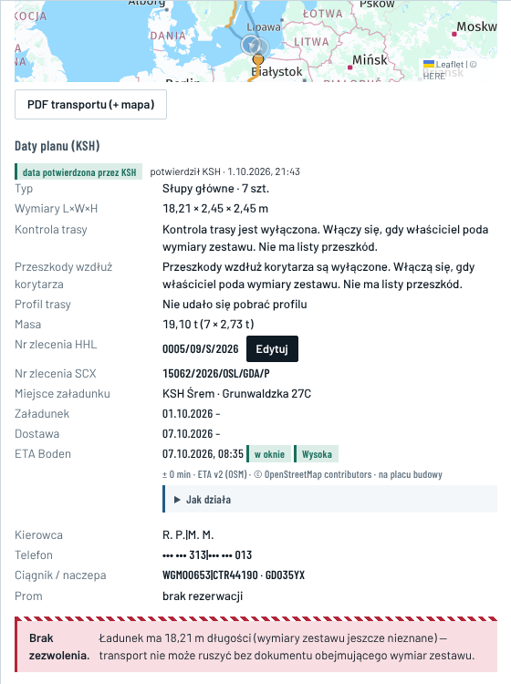
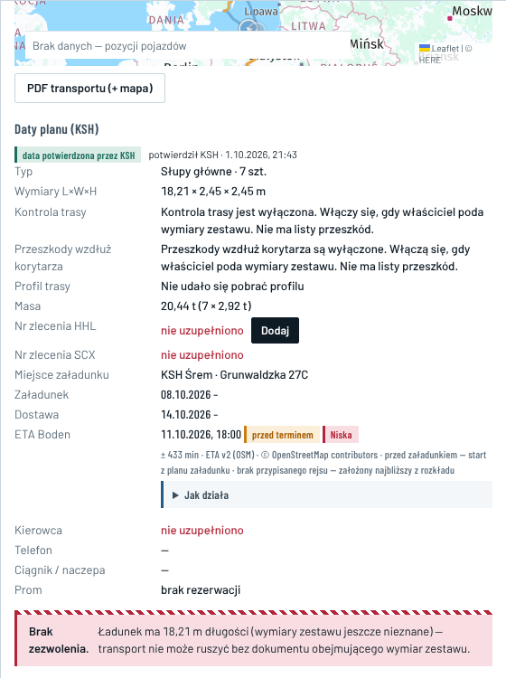
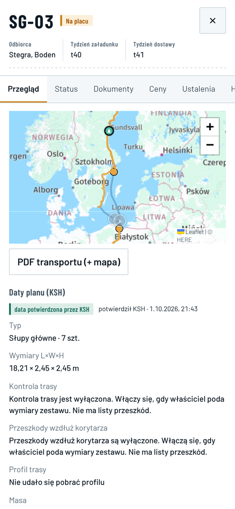
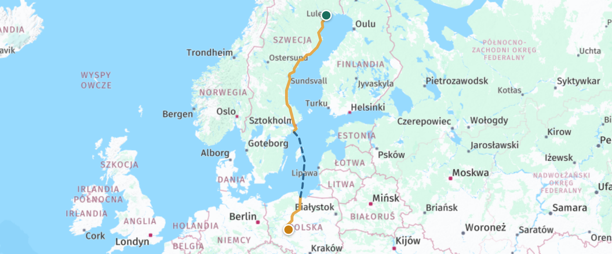
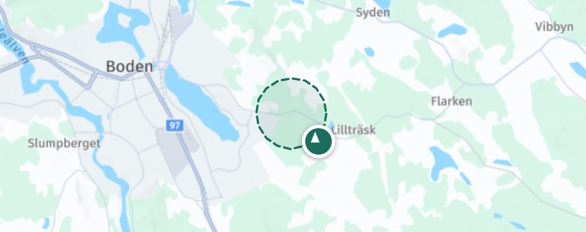

E32 · Panel transportu › Przegląd i awizacja · komputer i telefon
„Dziś” — zrzuty 08.10, 00:42 i 00:48, konto Operacje HHL · „po zmianie” — dane z bazy 08.10; SG-03 w chwili 07.10, 09:22; kierowcy ukryci; zestaw i piloci z Twojej tabeli 07.10
Dziś
SG-03 › PrzeglądNa placu„nie może ruszyć”

SG-15 › Przeglądzaładunek dziś3 braki bez podsumowania

Telefon 390 px

SG-03: 1409 px treści. Zakładka „Historia” ucięta. Do numerów i kierowcy trzeba przewinąć 2 ekrany.
Fakty 08.10kod, baza produkcji (tylko odczyt), zrzuty
- Kolejność dziś: mapa całego regionu, PDF, „Daty planu (KSH)”, typ i wymiary, „Kontrola trasy” i „Przeszkody” (dwa długie teksty „wyłączone”), „Profil trasy: Nie udało się pobrać profilu”, masa, numery, daty, ETA, kierowca, prom i czerwony baner. SG-03 ma 893 px treści przy 1366 px.
- „potwierdził KSH · 1.10.2026, 21:43” jest przy 94 z 94 transportów. To godzina importu pliku, a osoby potwierdzającej nie ma w żadnym. Tak samo jest przy 12 transportach bez daty załadunku i 17 bez daty dostawy. Od DATY-67 (0113) źródłem dat jest plik KSH, a „Potwierdź daty” usunięto. Plik nie ma godzin (0/94), stąd „01.10.2026 –”.
- Baner „Brak zezwolenia … transport nie może ruszyć” jest przy wszystkich 94, bo zezwoleń PL w bazie jest 0. Widać go też przy SG-03 („Na placu”) i SG-01 („Rozładowany”). Sprawdza tylko zezwolenie PL, bez SE i bez zezwoleń „Firma” (E31).
- SG-15 ma załadunek dziś (czw 08.10). Brakuje awizacji (pilne od 07.10, 12:00), numeru HHL i numeru SCX, a sprawa „Brak awizacji” ma status „nowa”. Przegląd pokazuje trzy czerwone „nie uzupełniono” w różnych miejscach. Nie ma podsumowania ani informacji, kto ma to uzupełnić. Przed wyjazdem jest ETA „11.10, 18:00 · przed terminem · Niska · ± 433 min”, a według E15 powinna być „–”.
- Awizacja: przycisk ma tylko SCX (`LoadDrawer.tsx` l. 199). Okno wymaga kierowcy i ciągnika, a telefon i naczepa są dobrowolne. Alarm w bazie (L3_AWIZ, 0143) wymaga kierowcy, telefonu, ciągnika i naczepy, więc zapisana awizacja może dalej liczyć się jako brak. Odcinka SE baza nie sprawdza.
- Jeden brak, kilka alarmów: 20 transportów bez awizacji daje 48 otwartych sygnałów. L3_AWIZ (48 h / 12 h przed załadunkiem) ma 18, a starszy RESOURCE_DEADLINE 15 dla kierowcy i 15 dla pojazdu. 13 transportów ma oba rodzaje.
- Piloci: baza ma tabelę pilotów (firma, rejestracja, odcinek PL / SE, kierowca, telefon), ale ma 0 wpisów, a panel jest w „Ustaleniach”. Wymóg liczy się z zezwoleń, których jest 0, więc wszędzie wychodzi „0 wymaganych”. Według Twojej tabeli pilota PL + SE potrzebują Kratownice (14 transportów, pierwszy KR-01 22.10) i PL-B (3, od 22.11). Symbol „PL” w pliku nie odróżnia PL-A od PL-B, robi to tylko szerokość 3,40 m. PL-1, PL-10.1 i PL-17.1 mają 2,60 m, a tabela PL-B 2,45 m. Cena jak przy 2,45 m jest już ustalona (30.09), a wysokość zestawu to pytanie 1.
- Wymiary zestawu ma 1 z 94 transportów (SG-01). Twoja tabela podaje je dla każdego symbolu (SG: 21,69 × 2,45 × 3,75 m), ale w aplikacji ich nie ma, a od nich zależą „Kontrola trasy” i „Przeszkody”. We wszystkich wierszach tabeli zestaw jest o 1,30 m wyższy od ładunku.
- Kierowcy: „R. P.|M. M.”, oba telefony w jednym linku (dzwoni tylko pierwszy), ciągnik „WGM00653|CTR44190”. Rozwiązanie jest w E6 (15:13). Prom „brak rezerwacji”: rejs ma 1 z 94 transportów (SG-24), a SG-03 przepłynął bez rejsu w systemie.
- Daty z pliku do sprawdzenia: KR-01 22.10 → 22.11 i KR-02 25.10 → 25.11 (31 dni). KR-04, KR-05, KR-06 i KR-07 mają załadunek i dostawę tego samego dnia. 70 transportów ma 4–8 dni. Mapa jest w skali regionu (zoom 11 z E1 niewdrożony), a przy SG-15 pisze „Brak danych — pozycji pojazdów”.
Po zmianie · komputer · Operacje HHL
SG-15 brak nr HHL Planowany✕
OdbiorcaStegra, BodenZaładunekczw 08.10 · t41Dostawaśr 14.10 · t42
PrzeglądStatusDokumentyCenyCzatHistoria
Do zrobienia przy tym transporcie · 4załadunek dziś
Awizacja — kierowca, telefon, ciągnik, naczepa
SCX · pilne od 07.10, 12:00
SCXZezwolenie PL i SE — firmowe na „Słupy główne”
SCX · raz dla wszystkich SG (E31) · po terminie
SCX

+−
Brak pozycji
Śledzenie od 08.10, 03:00
Brak linku śledzenia — SCX
Plan i ETA
- Załadunek
- czw 08.10.2026 · godzina nie podana
KSH Śrem · Grunwaldzka 27C
- Dostawa
- śr 14.10.2026 · godzina nie podana
Stegra, Boden
- Daty
- z harmonogramu KSH · import 01.10, 21:43
KSH może zmienić do wjazdu na załadunek
- ETA Boden
- – do wyjazdu ze Śremu (E15)
Awizacja · uzupełnia SCXbrak
- Kierowca
- —
- Ciągnik · naczepa
- — · —
- Link śledzenia
- —
- Rejs
- wybiera SCX z rozkładu w awizacji
Ładunek i zestaw
- Ładunek
- Słupy główne · SG · 7 szt. · 20,44 t
- Wymiary ładunku
- 18,21 × 2,45 × 2,45 m
- Zestaw z ładunkiem
- 21,69 × 2,45 × 3,75 m Zmień
z Twojej tabeli (SG) · zmienia HHL
- Zezwolenie
- Firma podpina się samo
Numery zleceń
- HHL
- brak Dodaj
- SCX
- brak · wpisuje SCX
DokumentyDokumenty →
- Zezwolenie PL, SE
- brak · po terminie
- CMR z załadunku
- do 2 h po załadunku
- Polisa SCX
- 436000430439 · do 29.03.2027
PDF transportu (+ mapa)
SG-03 · 0005/09/S/2026 Na placu✕
OdbiorcaStegra, BodenZaładunekczw 01.10 · t40Dostawaśr 07.10 · t41
PrzeglądStatusDokumentyCenyCzatHistoria
Do zrobienia przy tym transporcie · 2
CMR z załadunkuSCX · po terminie
SCXZezwolenie PL i SE — firmowe na „Słupy główne”
SCX · brak pliku w systemie
SCX

+−
Na placu od 07.10, 08:35
ostatnia pozycja 09:22 · postój
strefa „Plac budowy Stegra Boden” · zoom 11
Plan i ETA
- Załadunek
- czw 01.10.2026 · godzina nie podana
- Dostawa
- śr 07.10.2026 · godzina nie podana
- ETA Boden
- Na placu od 07.10, 08:35 w planie
Kierowcy i zestaw · przepięcie naczepy
Odcinek PL · Śrem → prom
R. P. · +48 ••• ••• 313 · ciągnik
WGM00653Odcinek SE · prom → Boden · teraz
M. M. · +48 ••• ••• 013 · ciągnik
CTR44190
- Naczepa
- GD035YX
- Link śledzenia
- wpisany
- Rejs
- nie przypisano
- Ładunek
- Słupy główne · 7 szt. · 19,10 t · zestaw 21,69 × 2,45 × 3,75 m
Numery zleceń
- HHL
- 0005/09/S/2026 Edytuj
- SCX
- 15062/2026/OSL/GDA/P
DokumentyDokumenty →
- Zezwolenie PL, SE
- brak pliku
- CMR z załadunku
- brak · po terminie
- Polisa SCX
- 436000430439 · do 29.03.2027
Po wyjeździe nie ma baneru „nie może ruszyć”. Braki zostają w Do zrobienia SCX.
Kto co widzi i zmienia
- HHL Administrator widzi wszystko. Zmienia numer HHL i zestaw. Może poprawić awizację (z pilotami, gdy transport ich wymaga), co zapisuje się w Historii. Dat i godzin nie zmienia.
- HHL Operacje zmienia numer HHL i zestaw (E9). Awizację i pilotów tylko ogląda. Dat i godzin nie zmienia.
- SCX (obie role) robi awizację: kierowców, ciągniki, naczepę, przepięcie, link śledzenia, rejs i — gdy transport ich wymaga — pilotów PL i SE. Wpisuje numer SCX. Zestaw tylko ogląda. Dat i godzin nie zmienia.
- KSH tylko ogląda. Ma „Edytuj daty” do wjazdu na załadunek (jak dziś) — daty i godziny zmienia i potwierdza tylko KSH i plik KSH (09.10). Nie ma „Do zrobienia”, tylko linię stanu, np. „Awizacja: przewoźnik uzupełnia”. Numery według E41.
- Znika: „Kontrola trasy” i „Przeszkody” (wrócą jedną linią, gdy powstanie lista przeszkód), „Profil trasy” (E17), czerwony baner zezwolenia i „potwierdził KSH” bez osoby.
- „Ocena przewoźnika” zostaje dla HHL po rozładunku, na dole.
Po zmianie · okno Awizacja (SCX, z pilotami przy „PL + SE”), telefon
Awizacja · SG-15brak nr SCXzaładunek czw 08.10 · Śrem✕
Brakuje: kierowca, telefon, ciągnik, naczepa. Pilne od 07.10, 12:00 (12 h przed dniem załadunku).
Awizacja · KR-01 · Pilociuzupełnia SCX w oknie Awizacja2 brakują
Kratownice: zestaw 23,69 × 3,52 × 3,9 m. Twoja tabela: „PL + SE” — wymagany pilot PL i pilot SE (dwóch różnych). Załadunek czw 22.10.
Brakuje: pilot PL — numer rejestracyjny, imię i nazwisko; pilot SE — numer rejestracyjny, imię i nazwisko.
Konwój czw 22.10: {kody transportów KR z tą datą załadunku} — ci sami piloci dla całego konwoju
←SG-15brak nr HHLPlanowany
PrzeglądStatusDokumentyCenyCzatHistoria
Do zrobienia · 4załadunek dziś
AwizacjaSCX · pilne od 07.10, 12:00
SCX
Brak pozycji
śledzenie od 08.10, 03:00
Plan · czw 08.10 → śr 14.10ETA – ▾
Awizacja brak▾
Ładunek i zestaw · SG · 21,69 m▾
Numery brak obu▾
Dokumenty 1 brak▾
Panel na cały ekran ze strzałką (E17). Zakładki przewija się w bok. Sekcje są zwinięte, a „Zadzwoń” przy kierowcy ma 44 px.